DJ RodMotter
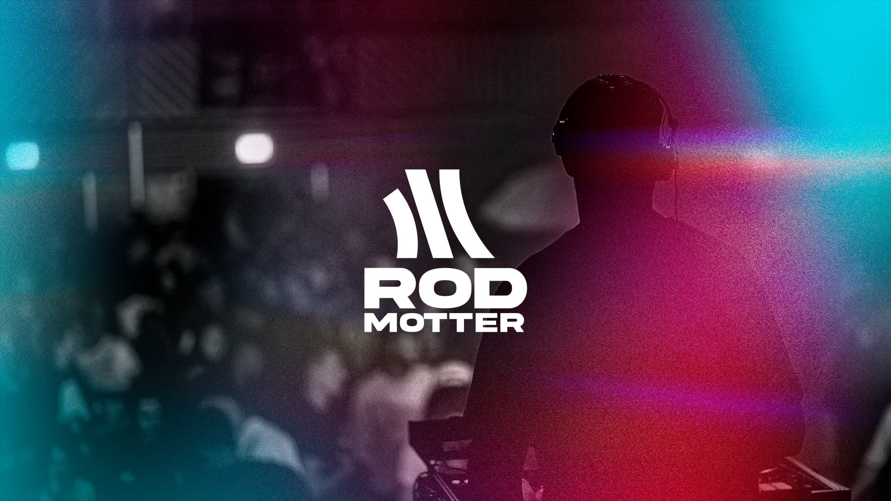
No escuches, siente
RodMotter empezó a producir de oído, sin teoría: un proceso caótico en el que lo que importaba no era la fórmula, sino cómo llegaba el sonido a quien lo escucha. La identidad parte de esa idea y representa su dualidad: un sonido sin fórmulas, sostenido por talento e instinto.
- Desafío
- Dar al DJ una identidad propia en una escena donde los artistas se parecen entre sí, y llevar a la imagen algo que no se ve: la sensación que deja su música.
- Solución
- Un símbolo de tres trazos en movimiento sobre el nombre en una sans pesada, y degradados de cian, magenta y negro con grano que funcionan como la parte visible del sonido. La voz es corta y en inglés, pensada para la pista: «It’s not music. It’s feeling», «Feel the music. Beyond the beats». El sistema se extiende a stickers, merch, web y publicidad exterior.
- Mi rol
- Ajustes finales de la identidad y fotografía del artista. El diseño es de Uel Molon y el concepto, de Gabriel Motter.
- Resultado
- Una identidad lista para cabina, redes y calle: el mismo degradado y la misma frase reconocibles en cada pieza, de la sudadera a la valla.
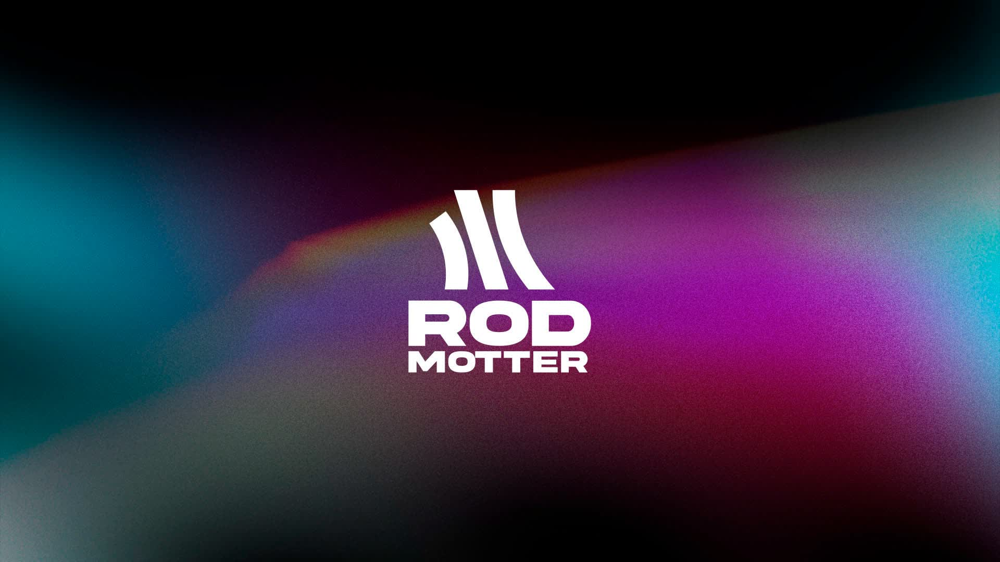
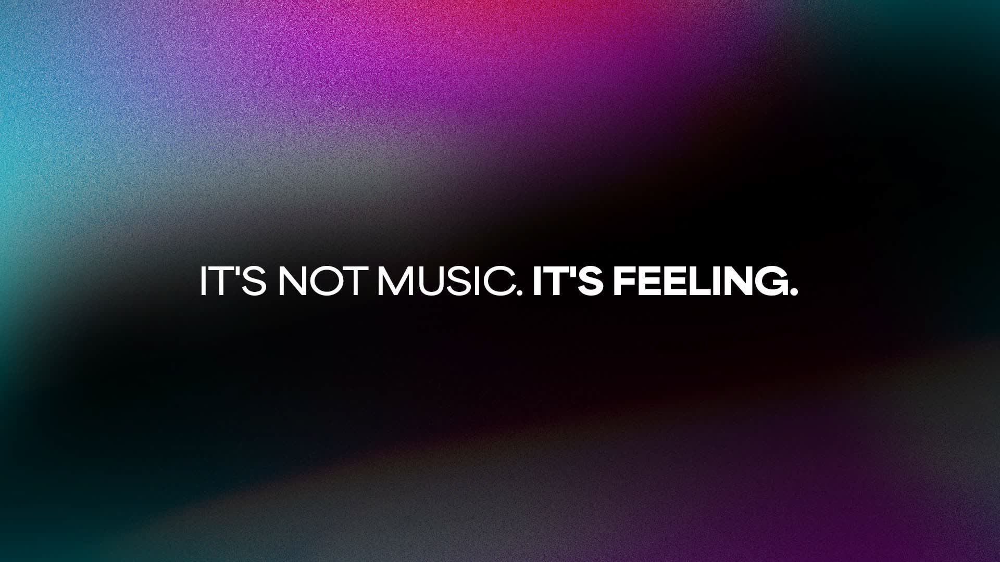
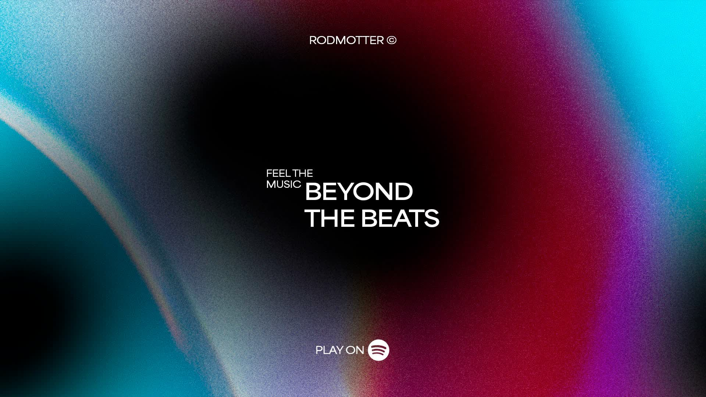
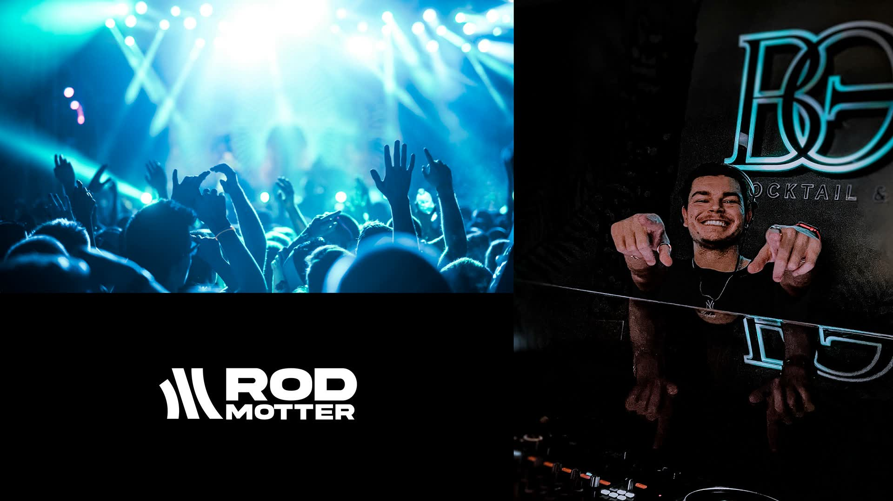
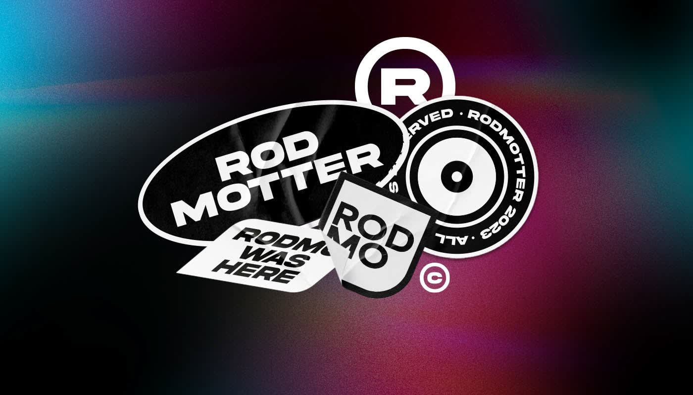
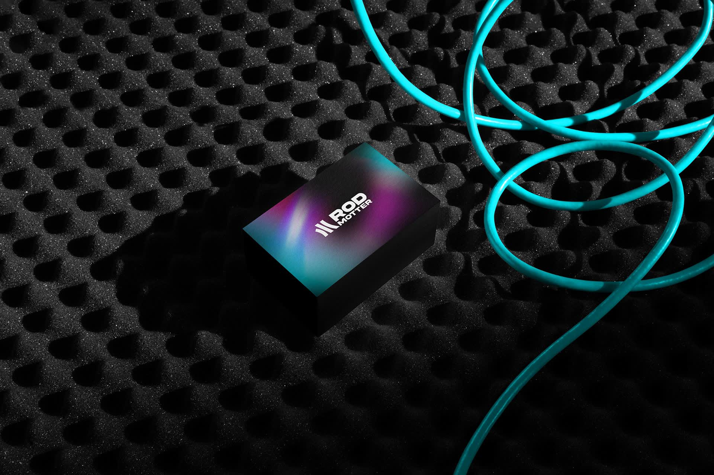
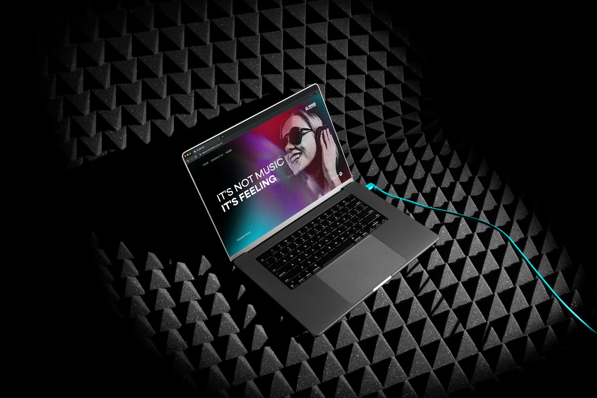
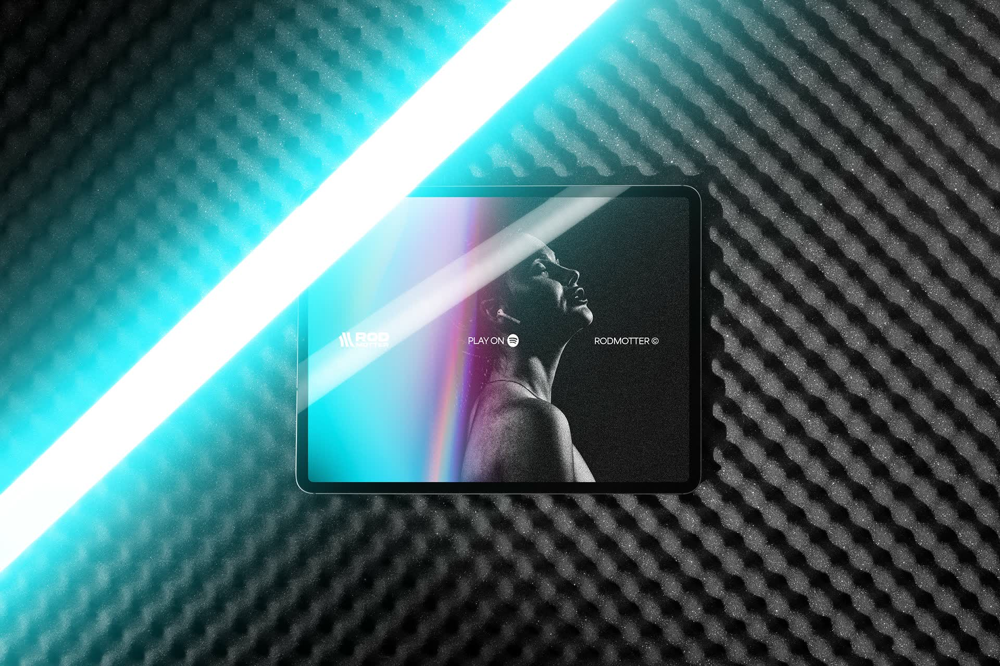
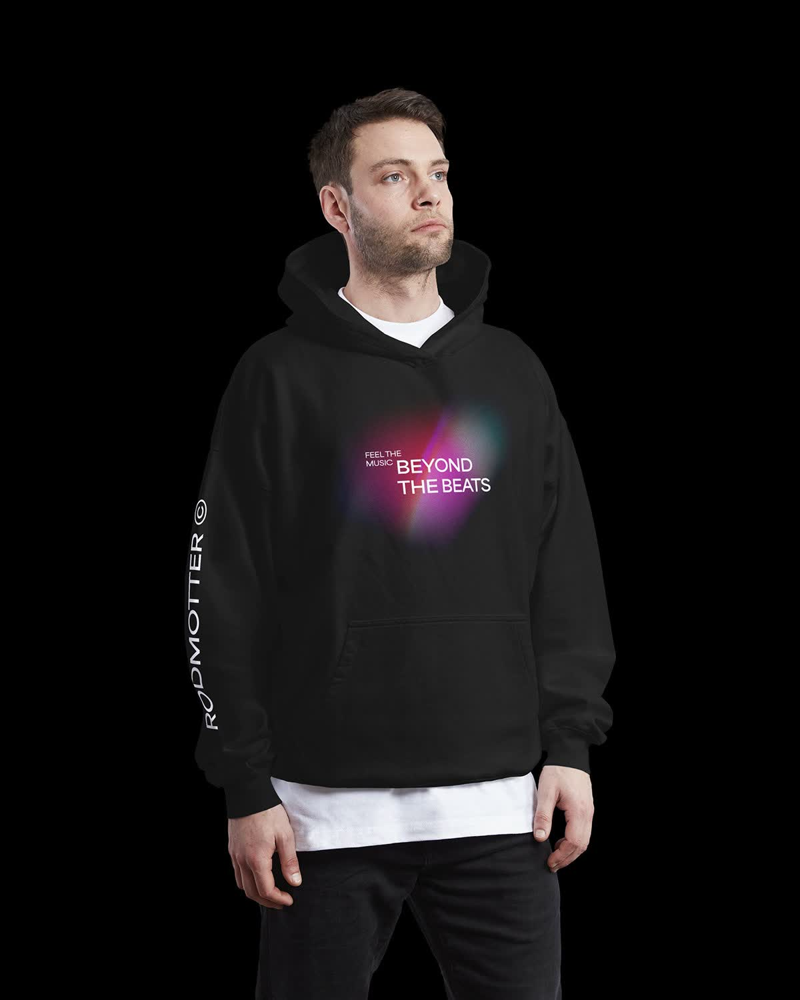
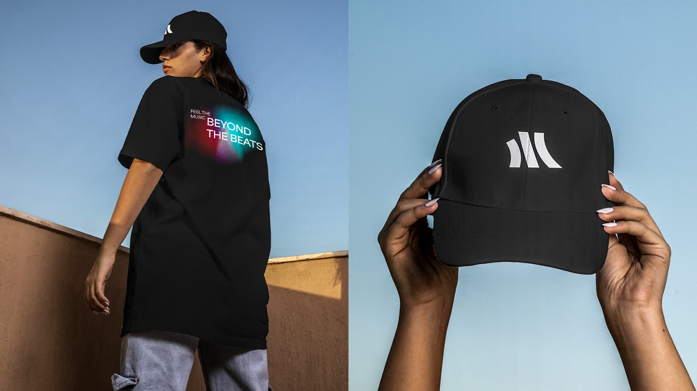
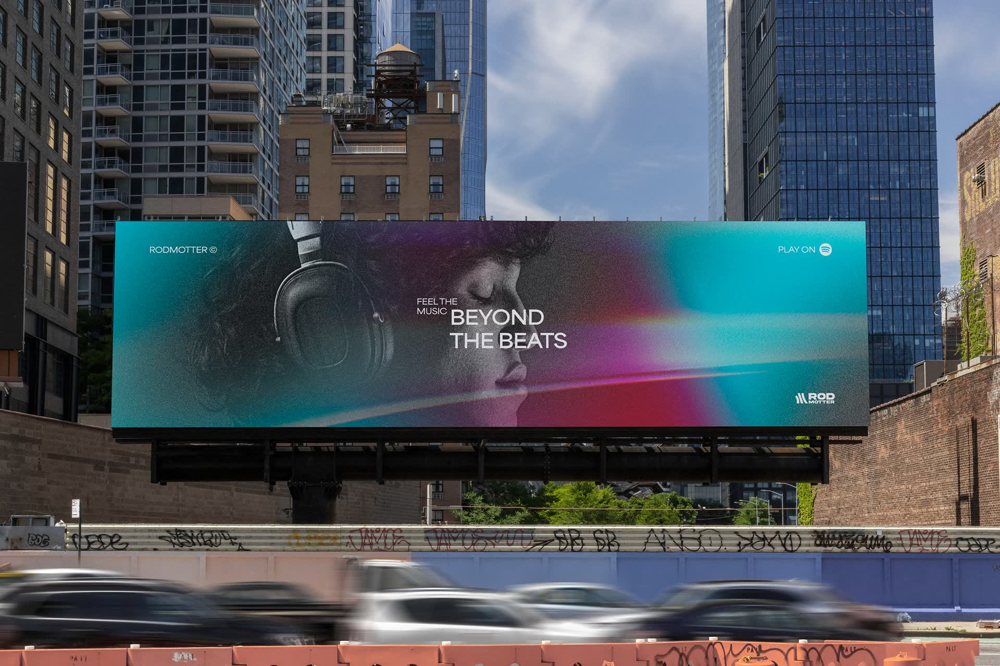
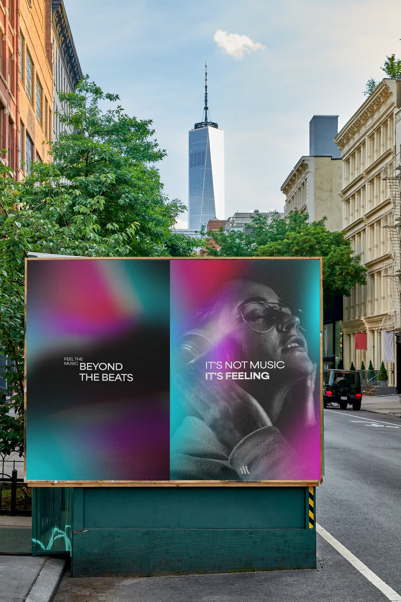
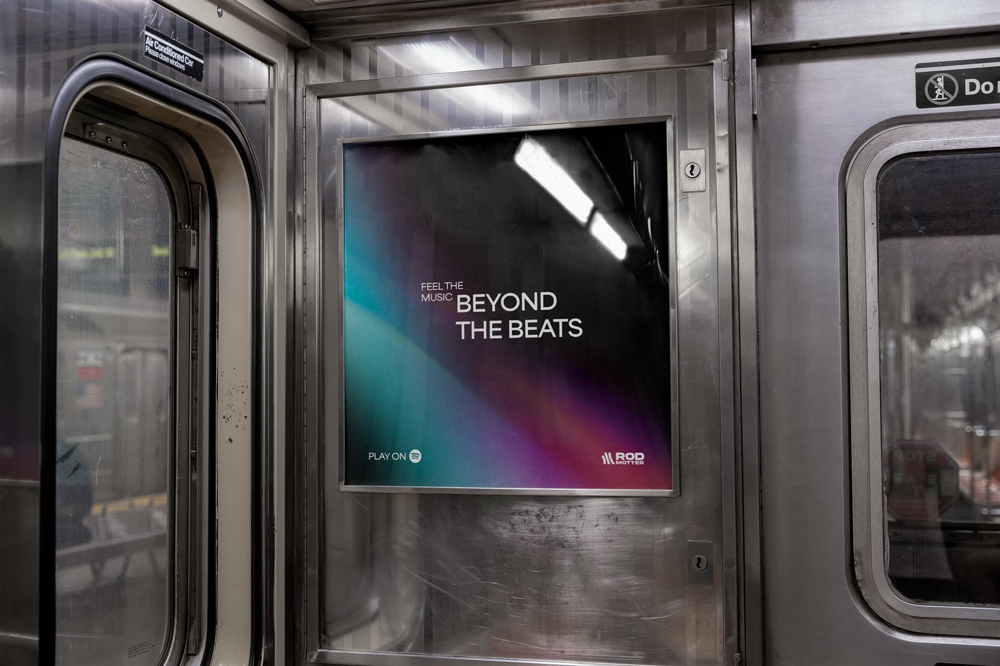
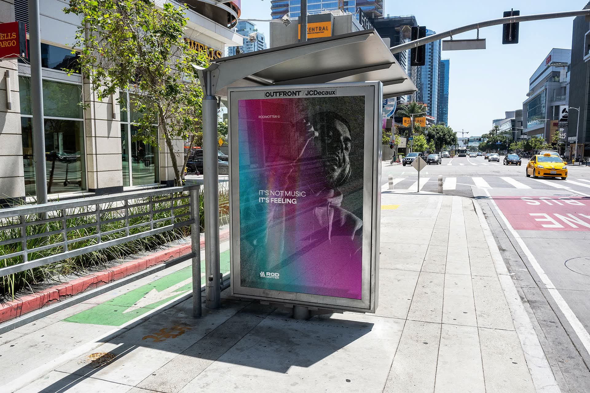
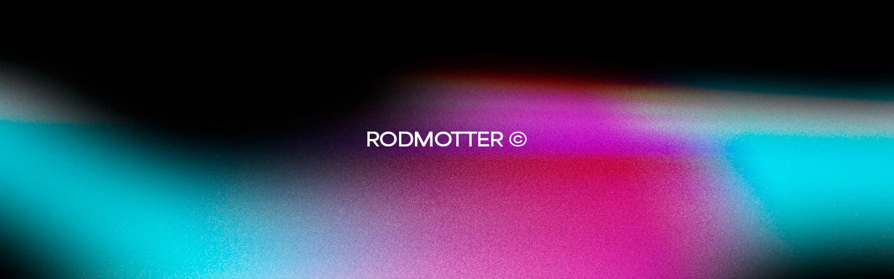
Créditos
Cliente
DJ RodMotter
Año
2023
Servicios
Identidad visual · Fotografía · Merchandising · Piezas gráficas · Publicidad exterior
Mi rol
Ajustes finales · Fotografía
Equipo
Uel Molon · diseño · Gabriel Motter · concepto